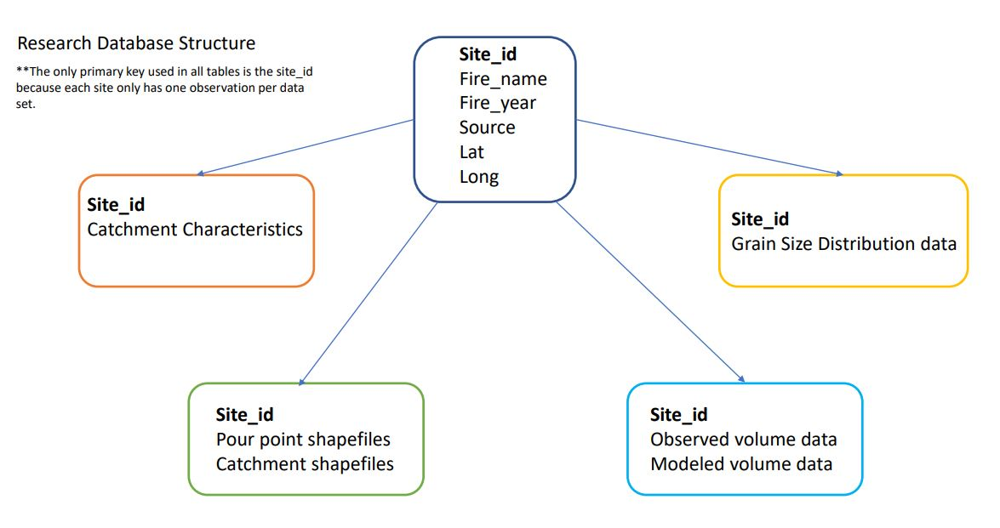

Chapter 2 Create Database
This document will create a database for my MS Research Data.
The database will follow the following structure:

Figure 2.1: Database Structure
The data in this database is compiled from primary fieldwork and from data found in the literature. For each post-fire debris flow characterized, location, grain size, volume, and catchment characteristics are provided. Each debris flow fan is characterized once and therefore the site_id for each fan is used as the Primary Key in all data sets in the database.
2.1 Step 1. Load packages and connect to the SQL database
## Warning: package 'RSQLite' was built under R version 4.0.3## Warning: package 'rlang' was built under R version 4.0.32.2 Step 2. Create DF_Locations Table
dbExecute(debrisflow_db, "CREATE TABLE DF_locations (
Site_id varchar(50),
Fire varchar(50),
fire_year varchar(5),
Source varchar(50),
year_surveyed varchar(5),
Lat double,
long double, PRIMARY KEY (Site_id));
")
DF_locations <- read.csv("DF_locations.csv", header = TRUE, stringsAsFactors = FALSE)
names(DF_locations)
dbWriteTable(debrisflow_db, "DF_locations", DF_locations, append= TRUE)## Site_id Fire fire_year Source year_surveyed
## 1 Brianhead 1 Brianhead 2017 Primary Fieldwork 2020
## 2 Brianhead 2 Brianhead 2017 Primary Fieldwork 2020
## 3 Brianhead 3 Brianhead 2017 Primary Fieldwork 2020
## 4 Brianhead 3.2 Brianhead 2017 Primary Fieldwork 2020
## 5 Brianhead 4 Brianhead 2017 Primary Fieldwork 2020
## 6 Clay Springs 1 Clay Springs Fire 2012 Primary Fieldwork 2020
## 7 Clay Springs 2 Clay Springs Fire 2012 Primary Fieldwork 2020
## 8 Dairy Fork 1 Coal Hollow Fire 2018 Primary Fieldwork 2020
## 9 Dairy Fork 2 Coal Hollow Fire 2018 Primary Fieldwork 2020
## 10 Dollar Ridge 1 Dollar Ridge Fire 2018 Primary Fieldwork 2020
## Lat long
## 1 37.74776 -112.7887
## 2 37.74148 -112.7932
## 3 37.72436 -112.7062
## 4 NA NA
## 5 37.75856 -112.7941
## 6 39.35653 -112.1648
## 7 39.33334 -112.1507
## 8 39.95080 -111.3493
## 9 39.95397 -111.3477
## 10 40.12092 -110.74462.3 Step 3. Create Catchment Characteristics Table
dbExecute(debrisflow_db, "CREATE TABLE catchments (
Site_id varchar(50),
cat_area float,
relief float,
mean_cat_elev float,
himod_perc float,
himod_area float,
slope23_perc float,
sort_unsort char(10),
clast_matrix char(10),
strat char(10),
boulder_perc float,
dom_lith char(20),
Lith_type char(20),
X2yr_storm float,
X100yr_storm float,
Al2O3Ws float, CaOWs float, Fe2O3Ws float, K2OWs float, MgOWs float,
Na2OWs float, NWs float, P2O5Ws float, SiO2Ws float,
PctAlluvCoastWs float,
PctEolFineWs float, PctCarbResidWs float, PctNonCarbResidWs float,
PctSilicicWs float, CompStrgthWs float, HydrlCondWs float,
AvgWetIndxWs float, ClayWs float, AgKffactWs float, PermWs float,
RckdepWs float, OmWs float, SandWs float,PctBl2011Ws float,
PctConif2011Ws float,
PctDecid2011Ws float, PctGrs2011Ws float,PctHay2011Ws float,
PctHbWet2011Ws float, PctMxFst2011Ws float, PctShrb2011Ws float,
Precip8110Ws float, RunoffWs float, Tmean8110Ws float, WtDepWs float
PRIMARY KEY (Site_id));
")
catchments <- read.csv("catchments.csv", header = TRUE, stringsAsFactors = FALSE)
names(catchments)
dbWriteTable(debrisflow_db, "catchments", catchments, append= TRUE)## Site_id cat_area relief mean_cat_elev himod_perc himod_area
## 1 Brianhead 1 0.36 305 2631 54 0.19
## 2 Brianhead 2 2.98 744 2924 45 1.34
## 3 Brianhead 3 0.62 276 2832 81 0.50
## 4 Brianhead 3.2 0.62 276 2832 81 0.50
## 5 Brianhead 4 2.10 473 2575 8 0.17
## 6 Clay Springs 1 4.01 901 2269 36 1.44
## 7 Clay Springs 2 2.07 1029 2154 7 0.14
## 8 Dairy Fork 1 2.12 583 2141 63 1.34
## 9 Dairy Fork 2 1.01 309 1993 48 0.48
## 10 Dollar Ridge 1 0.15 225 2054 17 0.03
## slope23_perc sort_unsort clast_matrix strat boulder_perc GSD_Q
## 1 15.5 unsorted clast not stratified 10 4
## 2 14.0 unsorted matrix not stratified 5 5
## 3 13.0 sorted matrix stratified 10 4
## 4 13.0 NA NA
## 5 54.0 unsorted matrix not stratified 3 4
## 6 65.0 unsorted clast not stratified 5 4
## 7 56.0 unsorted clast not stratified 3 3
## 8 5.0 sorted matrix not stratified 5 3
## 9 3.0 unsorted matrix not stratified 2 4
## 10 26.0 sorted matrix not stratified 10 4
## Vol_Q dom_lith Lith_type X2yr_storm X100yr_storm Al2O3Ws CaOWs Fe2O3Ws
## 1 4 volcanic igneous 5.09 15.48 12.23 9.80 4.82
## 2 5 volcanic igneous 5.33 16.07 11.88 10.54 4.70
## 3 4 volcanic igneous 4.92 15.10 14.86 3.73 5.62
## 4 NA volcanic igneous 4.92 15.10 NA NA NA
## 5 3 Limestone sedimentary 4.63 14.33 9.45 15.46 3.85
## 6 3 Limestone sedimentary 3.28 10.18 10.56 4.92 8.33
## 7 2 Limestone sedimentary 3.15 9.93 10.56 4.92 8.33
## 8 3 mudstone sedimentary 3.35 10.77 6.91 17.10 2.57
## 9 2 mudstone sedimentary 3.33 10.71 6.57 18.32 2.50
## 10 3 sandstone sedimentary 2.75 9.20 6.80 18.60 2.63
## K2OWs MgOWs Na2OWs NWs P2O5Ws SiO2Ws PctAlluvCoastWs PctEolFineWs
## 1 2.63 2.53 2.74 0.03 0.16 55.38075 0.00 0
## 2 2.57 2.57 2.63 0.04 0.16 54.27291 0.00 0
## 3 3.17 2.03 3.60 0.03 0.18 64.69118 0.00 0
## 4 NA NA NA NA NA NA NA NA
## 5 2.16 3.04 1.84 0.04 0.14 46.56477 0.00 0
## 6 2.15 2.41 1.05 0.17 0.14 54.65962 64.51 0
## 7 2.15 2.41 1.05 0.17 0.14 54.65962 64.51 0
## 8 1.54 3.12 0.93 0.12 0.18 41.36917 0.00 0
## 9 1.54 3.59 0.90 0.11 0.18 39.28827 0.00 0
## 10 1.53 3.51 1.02 0.11 0.19 39.05255 0.02 0
## PctCarbResidWs PctNonCarbResidWs PctSilicicWs CompStrgthWs HydrlCondWs
## 1 0.00 28.13 71.87 70.24 0.03
## 2 0.00 13.77 86.23 70.42 0.03
## 3 0.00 0.00 100.00 72.66 0.04
## 4 NA NA NA NA NA
## 5 0.00 45.32 54.68 71.26 0.03
## 6 12.08 23.41 0.00 30.00 3.77
## 7 12.08 23.41 0.00 30.00 3.77
## 8 0.00 100.00 0.00 76.74 0.02
## 9 0.00 100.00 0.00 77.29 0.03
## 10 0.00 99.98 0.00 79.03 0.02
## AvgWetIndxWs ClayWs AgKffactWs PermWs RckdepWs OmWs SandWs PctBl2011Ws
## 1 310.24 34.97 0 1.21 147.05 0.76 22.76 1.09
## 2 317.89 31.03 0 2.51 145.97 0.64 28.55 4.62
## 3 349.50 35.00 0 1.20 147.06 0.76 22.57 0.04
## 4 NA NA NA NA NA NA NA NA
## 5 300.02 32.94 0 1.88 146.50 0.70 25.67 4.26
## 6 431.81 20.43 0 6.93 123.86 0.93 37.31 0.39
## 7 431.81 20.43 0 6.93 123.86 0.93 37.31 0.39
## 8 338.03 22.87 0 4.70 108.43 0.56 38.65 0.00
## 9 296.74 22.23 0 4.73 108.81 0.67 38.79 0.03
## 10 262.52 20.38 0 6.06 101.72 1.31 36.53 9.20
## PctConif2011Ws PctDecid2011Ws PctGrs2011Ws PctHay2011Ws PctHbWet2011Ws
## 1 56.23 1.82 0.18 0.00 0
## 2 52.72 6.22 1.87 0.00 0
## 3 43.61 19.17 0.19 0.00 0
## 4 NA NA NA NA NA
## 5 62.20 3.78 1.00 0.00 0
## 6 33.24 2.27 13.81 0.42 0
## 7 33.24 2.27 13.81 0.42 0
## 8 15.68 61.01 0.00 0.00 0
## 9 43.59 34.90 0.00 0.00 0
## 10 46.11 5.33 0.06 0.11 0
## PctMxFst2011Ws PctShrb2011Ws Precip8110Ws RunoffWs Tmean8110Ws WtDepWs
## 1 39.61 1.00 756.61 30.00 4.62 182.88
## 2 31.22 3.27 859.86 30.21 3.35 182.88
## 3 31.50 4.98 690.55 38.65 3.77 182.88
## 4 NA NA NA NA NA NA
## 5 25.00 3.59 776.01 30.11 4.23 182.88
## 6 0.01 49.59 404.38 29.00 8.96 182.88
## 7 0.01 49.59 404.38 29.00 8.96 182.88
## 8 0.00 23.31 572.16 248.00 6.99 182.88
## 9 0.21 21.21 565.32 248.00 6.84 182.88
## 10 1.24 37.45 519.64 57.78 5.03 181.972.4 Step 4. Create Grain Size Distribution Table
dbExecute(debrisflow_db, "CREATE TABLE GSD (
Site_id varchar(50),
subD16 float,
subD50 float,
subD84 float,
D84B float,
surD16 float,
surD50 float,
surD84 float,
subD50range float,
sub_var float,
sur_var float,
PRIMARY KEY (Site_id));
")
GSD <- read.csv("GSD_data.csv", header = TRUE, stringsAsFactors = FALSE)
names(GSD)
dbWriteTable(debrisflow_db, "GSD", GSD, append= TRUE)## Site_id subD16 subD50 subD84 D84B surD16 surD50 surD84 subD50range
## 1 Brianhead 1 1.81 12.71 33.94 1116.0 13.67 30.08 50.59 3.72
## 2 Brianhead 2 1.00 12.40 54.62 527.0 11.58 30.29 51.53 6.82
## 3 Brianhead 3 0.33 11.85 55.86 537.5 12.15 40.99 74.31 40.22
## 4 Brianhead 3.2 NA NA NA NA NA NA NA NA
## 5 Brianhead 4 1.68 21.61 58.63 820.0 19.30 31.65 53.75 5.05
## 6 Clay Springs 1 1.08 10.51 40.23 380.0 11.43 40.23 72.48 1.40
## 7 Clay Springs 2 13.15 32.95 58.78 NA 16.96 26.36 43.17 NA
## 8 Dairy Fork 1 2.62 13.97 57.36 540.0 6.63 20.95 38.26 3.37
## 9 Dairy Fork 2 0.90 4.78 13.58 490.0 2.00 8.25 19.30 NA
## 10 Dollar Ridge 1 0.53 6.88 56.88 860.0 19.21 32.26 55.90 0.43
## sub_var sur_var
## 1 4.23 1.89
## 2 5.77 2.15
## 3 7.40 2.61
## 4 NA NA
## 5 5.13 1.48
## 6 5.22 2.66
## 7 2.16 1.35
## 8 4.45 2.53
## 9 3.92 3.27
## 10 6.75 1.542.5 Step 5. Create Volume Data Table
dbExecute(debrisflow_db, "CREATE TABLE volume (
obsVol_min varchar(50),
obsVol float,
obsVol_max float,
G08_vol2yr_min float,
G08_vol2yr float,
G08_vol2yr_max float,
G08_vol100yr_min float,
G08_vol100yr float,
G08_vol100yr_max float,
G14_vol2yr_min float,
G14_vol2yr float,
G14_vol2yr_max float,
G14_vol100yr_min float,
G14_vol100yr float,
G14_vol100yr_max float,
PRIMARY KEY (Site_id));
")
volume <- read.csv("DF_Volume_data.csv", header = TRUE, stringsAsFactors = FALSE)
names(volume)
dbWriteTable(debrisflow_db, "volume", volume, append= TRUE)## Site_id obsVol_min obsVol obsVol_max G08_vol2yr_min G08_vol2yr
## 1 Brianhead 1 73.1250 97.50 131.6250 117.86806 943.4712
## 2 Brianhead 2 468.7500 625.00 843.7500 503.77232 4032.4298
## 3 Brianhead 3 1350.0000 1800.00 2430.0000 218.57784 1749.5996
## 4 Brianhead 3.2 399.0000 532.00 718.2000 711.47298 5694.9633
## 5 Brianhead 4 1141.8750 1522.50 2055.3750 1363.30468 10912.5299
## 6 Clay Springs 1 140.2500 187.00 252.4500 680.62099 5448.0095
## 7 Clay Springs 2 130.5000 174.00 234.9000 310.77948 2487.6247
## 8 Dairy Fork 1 27.1875 36.25 48.9375 204.96535 1640.6388
## 9 Dairy Fork 2 993.7500 1325.00 1788.7500 78.84295 631.0960
## 10 Dollar Ridge 1 5250.0000 7000.00 9450.0000 13357.70775 106921.3564
## G08_vol2yr_max G08_vol100yr_min G08_vol100yr G08_vol100yr_max G14_vol2yr_min
## 1 7551.986 76.98279 616.2063 4932.404 110.01438
## 2 32277.459 324.97765 2601.2735 20821.813 805.88558
## 3 14004.615 142.36557 1139.5608 9121.579 136.56922
## 4 45585.157 477.27337 3820.3199 30579.632 174.91993
## 5 87349.007 1027.20720 8222.2481 65814.729 973.26510
## 6 43608.423 518.32663 4148.9294 33209.976 548.34744
## 7 19912.115 229.43772 1836.5271 14700.424 444.47567
## 8 13132.442 151.40054 1211.8810 9700.463 131.13507
## 9 5051.588 60.46193 483.9656 3873.888 30.44355
## 10 855848.674 9922.14946 79421.5369 635727.224 5614.71204
## G14_vol2yr G14_vol2yr_max G14_vol100yr_min G14_vol100yr G14_vol100yr_max
## 1 880.6066 7048.789 211.70029 1694.5484 13563.960
## 2 6450.6861 51634.316 1563.94325 12518.5351 100204.225
## 3 1093.1641 8750.198 261.71595 2094.8972 16768.540
## 4 1400.1411 11207.386 330.79300 2647.8223 21194.411
## 5 7790.4703 62358.577 1666.82324 13342.0348 106795.903
## 6 4389.2300 35133.455 937.94561 7507.7565 60095.604
## 7 3557.7917 28478.233 782.87071 6266.4642 50159.718
## 8 1049.6666 8402.024 230.64137 1846.1617 14777.544
## 9 243.6845 1950.565 52.04251 416.5727 3334.443
## 10 44942.7880 359743.149 9598.77383 76833.0868 615008.054